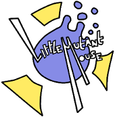

<link rel="preconnect" href="https://fonts.googleapis.com">
<link rel="preconnect" href="https://fonts.gstatic.com" crossorigin>
<link href="https://fonts.googleapis.com/css2?family=Fascinate+Inline&family=Macondo&display=swap" rel="stylesheet">

<nav class="navbar navbar-expand-lg navbar-light bg-dark">
  <!-- <a class="navbar-brand "routerLink="inicio"> -->
  <div [ngSwitch]="activeId">
    
    
    
    
    
    
    
  </div>
  <!-- </a> -->
  <div class="container-fluid">
    <!-- <a</a> -->
    <p class="navbar-brand text-white text-bold my-auto desarrollo">Desarrollo Videojuegos</p>
    <button class="navbar-toggler" type="button" data-bs-toggle="collapse" data-bs-target="#navbarNavAltMarkup" aria-controls="navbarNavAltMarkup" aria-expanded="false" aria-label="Toggle navigation">
      <span class="navbar-toggler-icon"></span>
    </button>
    <div class="collapse navbar-collapse justify-content-end align-item-center" id="navbarNavAltMarkup">
      <div class="navbar-nav navnav justify-content-between">

        <a routerLinkActive="active-link" (click)="changeImage(0)" class="text-center btn_select nav-link active text-white py-2 px-4 rounded" aria-current="page" routerLink="inicio">Inicio</a>  
        
        <div class="nav-item dropdown btn_select ms-3">
          <a class="text-center nav-link dropdown-toggle text-white py-2 px-4 rounded" href="#" id="navbarDropdownMenuLink" role="button" data-bs-toggle="dropdown" aria-expanded="false">
            Lista Juegos</a>
          <ul class="text-center dropdown-menu " aria-labelledby="navbarDropdownMenuLink">
            <li><a routerLinkActive="active-link" (click)="changeImage(1)"  class="nav-link text-white p-2 m-2 rounded" routerLink="gatuhrun">Gatuh Run</a>  </li>
            <li><a routerLinkActive="active-link" (click)="changeImage(2)"  class="nav-link text-white p-2 m-2 rounded" routerLink="purucu">Purucu & Pipicu</a>  </li>
            <li><a routerLinkActive="active-link" (click)="changeImage(3)"  class="nav-link text-white p-2 m-2 rounded" routerLink="lmm">LMM</a>  </li>
            <li><a routerLinkActive="active-link" (click)="changeImage(4)"  class="nav-link text-white p-2 m-2 rounded" routerLink="fmc">Full Metal Cat</a>  </li>
            <li><a routerLinkActive="active-link" (click)="changeImage(5)"  class="nav-link text-white p-2 m-2 rounded" routerLink="museo">Museo de Ciencias y Artes</a>  </li>
            <li><a routerLinkActive="active-link" (click)="changeImage(6)"  class="nav-link text-white p-2 m-2 rounded" routerLink="otros">Otros</a>  </li>
          </ul>
        </div>

      </div>
    </div>
  </div>
</nav>
<router-outlet></router-outlet>
